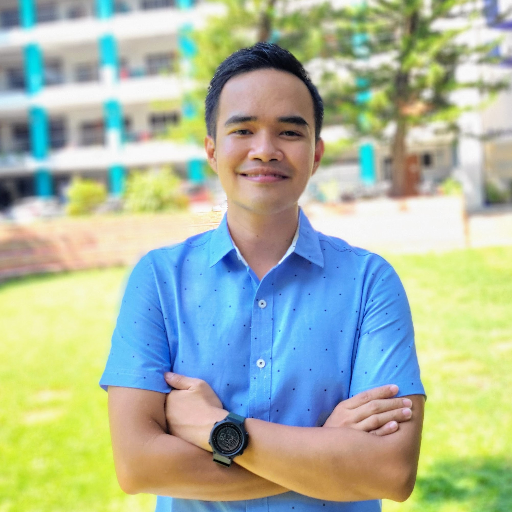

|  |
Stephen Ezekiel GaleraICT graduate | Web DeveloperI'm a fresh graduate in Information Technology, specializing in Web and Mobile App Development. Throughout college, I worked as a freelance graphic designer and video editor, helping brands create visually compelling content. Now, I'm looking for opportunities to help businesses and organizations enhance their online presence through well-designed websites and web apps tailored to their needs. I have strong communication skills, collaborate well with clients, and am committed to delivering high-quality digital solutions. Based in the Philippines, I work remotely and am ready to bring your ideas to life! |